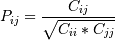

numpy.corrcoef¶
- numpy.corrcoef(x, y=None, rowvar=1, bias=0, ddof=None)[source]¶
Return correlation coefficients.
Please refer to the documentation for cov for more detail. The relationship between the correlation coefficient matrix, P, and the covariance matrix, C, is

The values of P are between -1 and 1, inclusive.
Parameters : x : array_like
A 1-D or 2-D array containing multiple variables and observations. Each row of m represents a variable, and each column a single observation of all those variables. Also see rowvar below.
y : array_like, optional
An additional set of variables and observations. y has the same shape as m.
rowvar : int, optional
If rowvar is non-zero (default), then each row represents a variable, with observations in the columns. Otherwise, the relationship is transposed: each column represents a variable, while the rows contain observations.
bias : int, optional
Default normalization is by (N - 1), where N is the number of observations (unbiased estimate). If bias is 1, then normalization is by N. These values can be overridden by using the keyword ddof in numpy versions >= 1.5.
ddof : {None, int}, optional
New in version 1.5.
If not None normalization is by (N - ddof), where N is the number of observations; this overrides the value implied by bias. The default value is None.
Returns : out : ndarray
The correlation coefficient matrix of the variables.
See also
- cov
- Covariance matrix